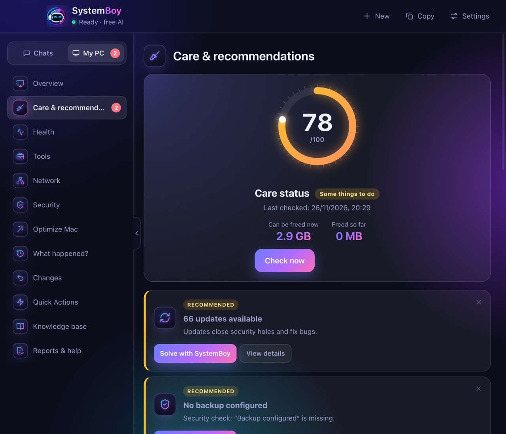
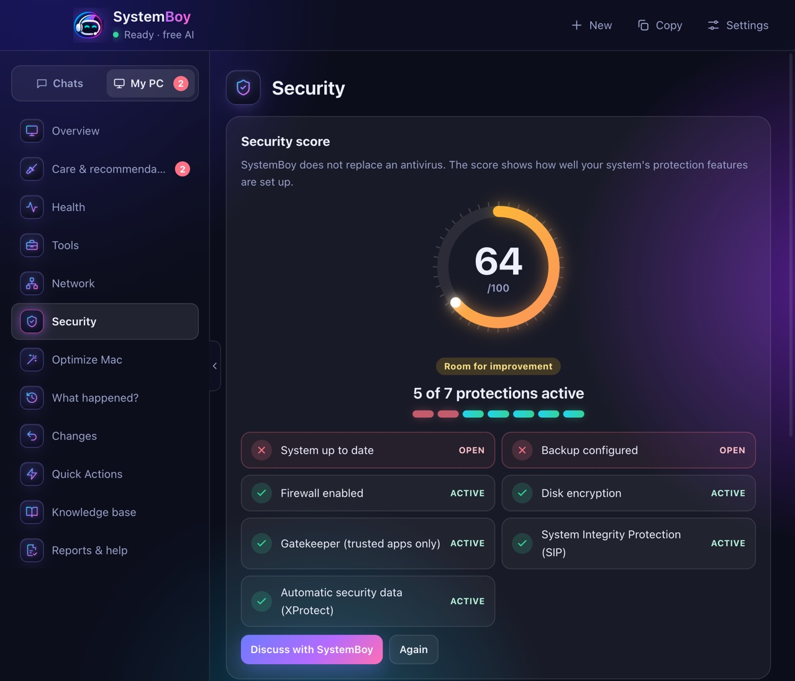
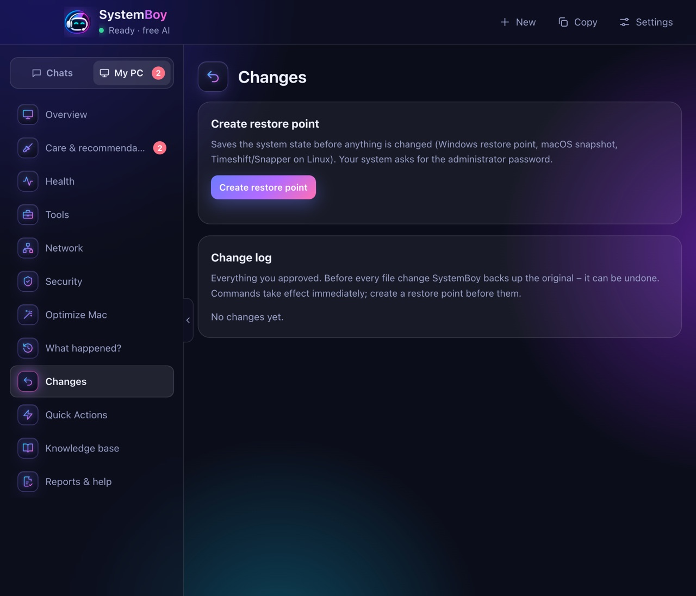
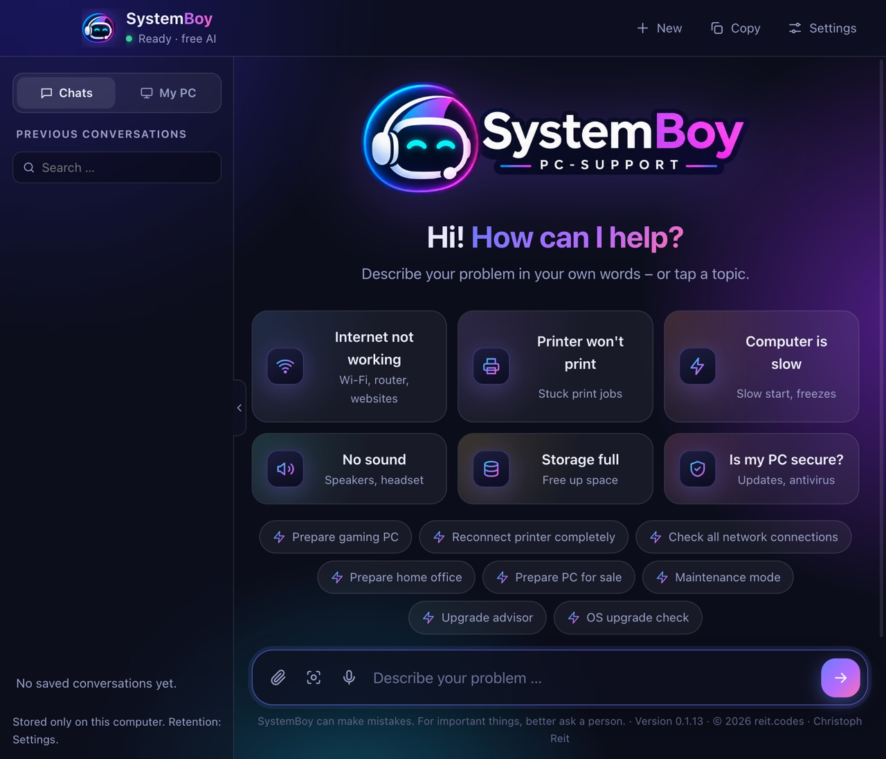
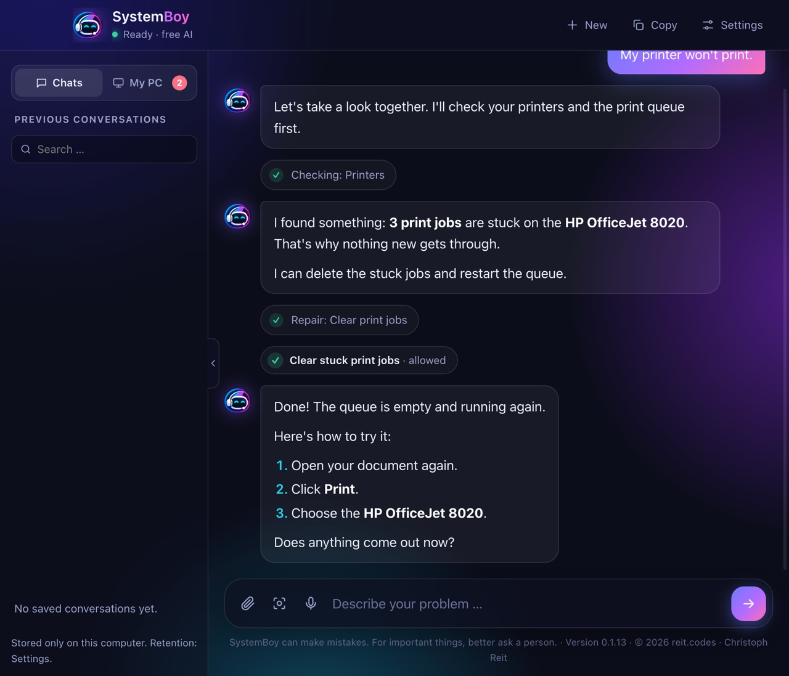
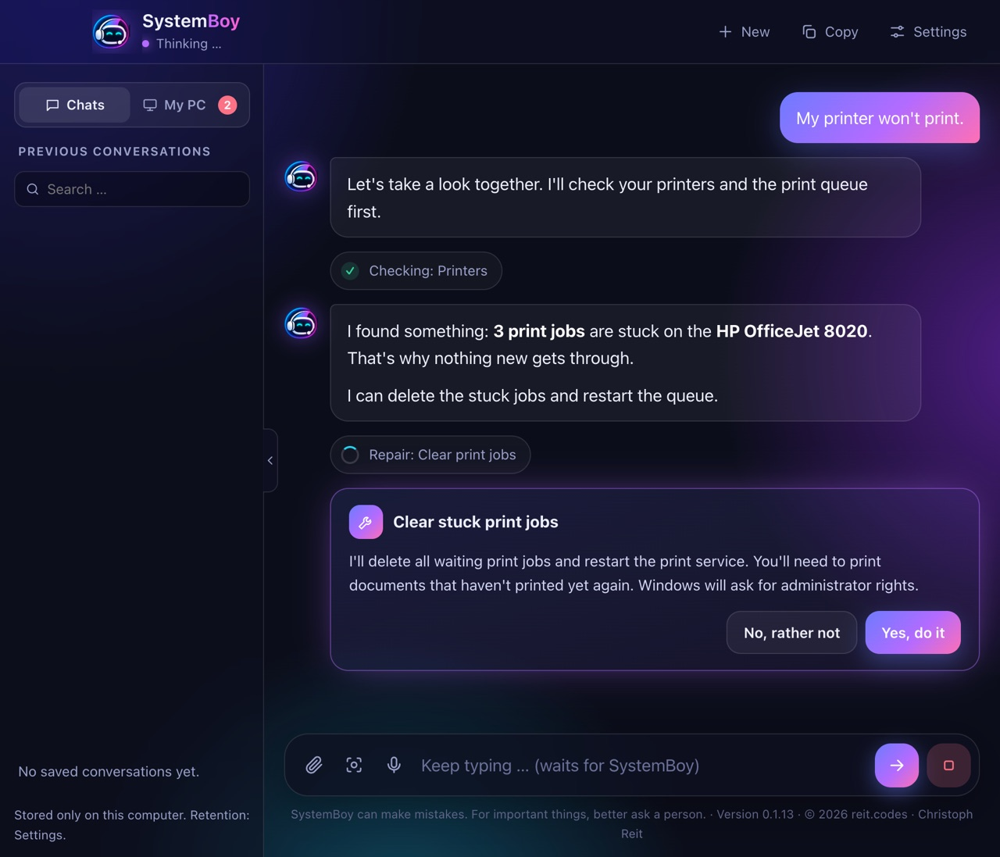
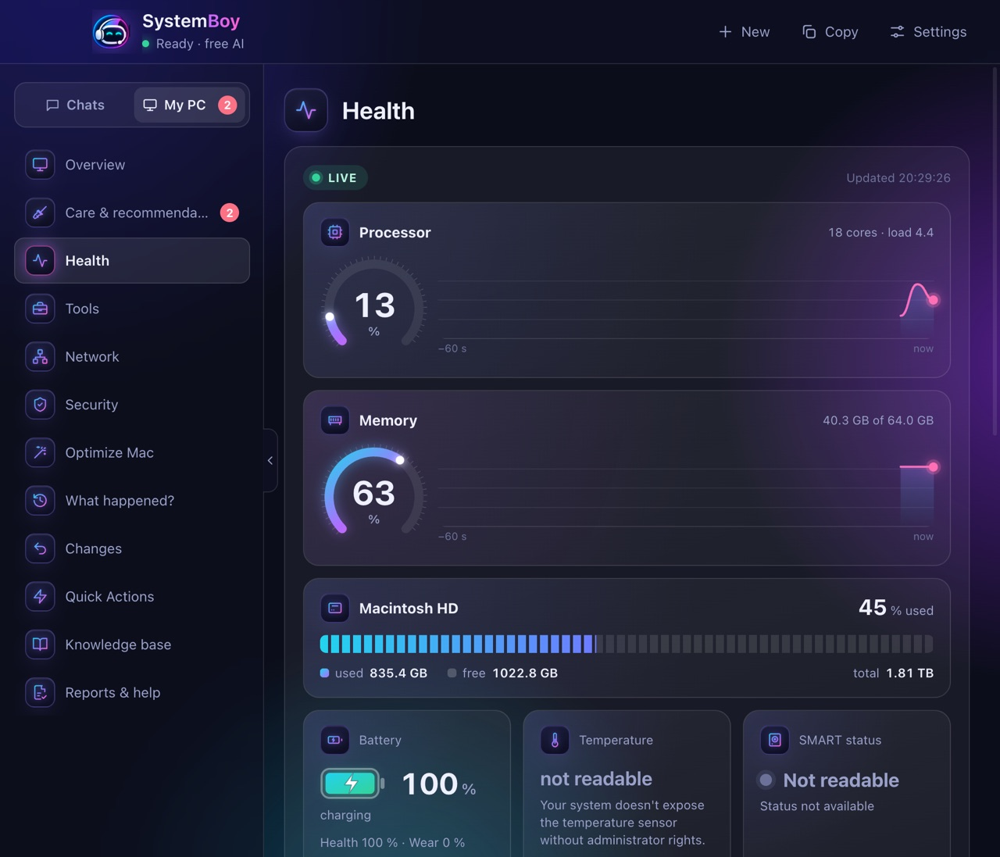

A real agent
SystemBoy runs commands, changes settings, installs and removes programs – via OpenCode, a proven open-source AI agent. No copy-pasting commands from the internet.
Features
Except SystemBoy always has time, costs nothing and never rolls its eyes. It examines your computer, finds the cause and fixes it – every step only with your consent.
Say in your own words what isn't working – or tap a topic. Technical terms? Not needed. A screenshot of the error message helps too.
SystemBoy checks your system with fixed, read-only tools: network, drivers, logs, storage, crashes. That's how it finds the real cause.
You see exactly what will run and why. Nothing happens until you agree. File changes can be undone.
SystemBoy runs commands, changes settings, installs and removes programs – via OpenCode, a proven open-source AI agent. No copy-pasting commands from the internet.
Device profile with hardware, system and programs. SystemBoy remembers your PC and picks up where earlier conversations left off.
CPU, RAM, drives, SMART, battery wear, temperature and uptime at a glance.
Timeline of the last 14 days: crashes, updates, drivers, installs, network. “Since when?” – SystemBoy finds the common cause.
Antivirus, firewall, encryption, updates, backup and ransomware protection as a clear score – plus checks of signatures, browser extensions, ports, certificates and privacy settings.
One-click restore point. Before every file change SystemBoy backs up the original – undo any time.
Your own one-click workflows: “Prepare gaming PC”, “Reconnect printer”, “Prepare PC for sale” …
Speaks up before things break: disk almost full, SMART warning, new crashes, battery worn out. With scheduler and maintenance report.
Windows: remove preinstalled apps, ads, telemetry, Copilot and Recall – with Win11Debloat in its latest version. Mac: privacy, Siri, Finder, Dock, firewall and preinstalled apps – every change exactly reversible.
All conversations in the sidebar – search, continue, rename. Retention is up to you.
SystemBoy remembers what it finds out about your PC – in plain words or technical, matching your experience. Editable in the chat or by hand.
Technical report for your IT person – user name, e-mail, IPs and serial numbers are removed first.
After every fix, explains the cause and how to avoid it in future.
Take a screenshot with the built-in tool, mark it up, pixelate it – SystemBoy reads the error message.
Under the hood runs OpenCode, an open-source AI agent (MIT license). It is already included in SystemBoy and kept up to date automatically. SystemBoy is an independent project and not affiliated with Anomaly, the company behind OpenCode.
Three features that show why SystemBoy is more than a chat – with real pictures from the app.

SystemBoy checks your PC regularly in the background and shows a care status from 0 to 100. Every recommendation comes with a matching action – often done in one click.

Antivirus, firewall, encryption, updates, backup and ransomware protection – summed up in one clear score.

Everything you approved is in the log. Before every file change SystemBoy backs up the original – one click brings it back.




SystemBoy isn't tied to any provider. After you sign in, it picks a suitable model automatically.
Built-in AI access without sign-in, with a daily limit. Just get going.
ChatGPT Plus/Pro, GitHub Copilot, Grok, Poe, GitLab Duo, DigitalOcean.
Claude, Gemini, OpenRouter, Groq, Mistral, NVIDIA – over 300 providers, many with a free tier.
Ollama or LM Studio on your computer – detected automatically.
Works with
Explains without jargon, step by step, with large text and dictation.
Your parents calling again? SystemBoy helps on the spot – and the support package shows you what's up.
Less downtime, home-office check, printers, VPN, maintenance report.
Ports, services, event logs, crash dumps, certificates – faster than any console.
Download SystemBoy and let it take a look. Costs nothing, does nothing without you.